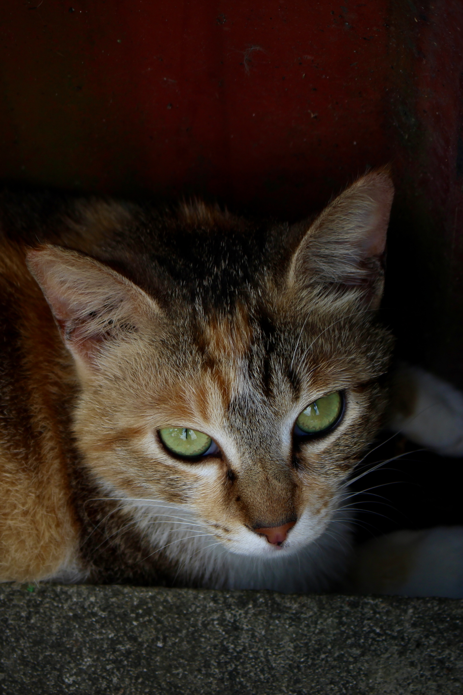

PHOTOGRAPHY
PHOTOGRAPHY
YUAN-PING WANG
PHOTOGRAPHY
ABOUT ME
Hi, I'm Yuan-Ping Wang, a passionate photographer based in Taipei. My love for photography revolves around capturing the beauty of landscapes and nature. Whether it's the vibrant scenes of the city or the serene tranquility of natural settings, my lens seeks to tell a visual story of Taipei's diverse scenery.
Join me on a journey through my photography, and experience the captivating narratives I unfold in each frame, showcasing the unique beauty of Taipei.
MY 2023 PROJECTS

Photo 1
Portraits
Photo 2
View
Photo 3
City&Food